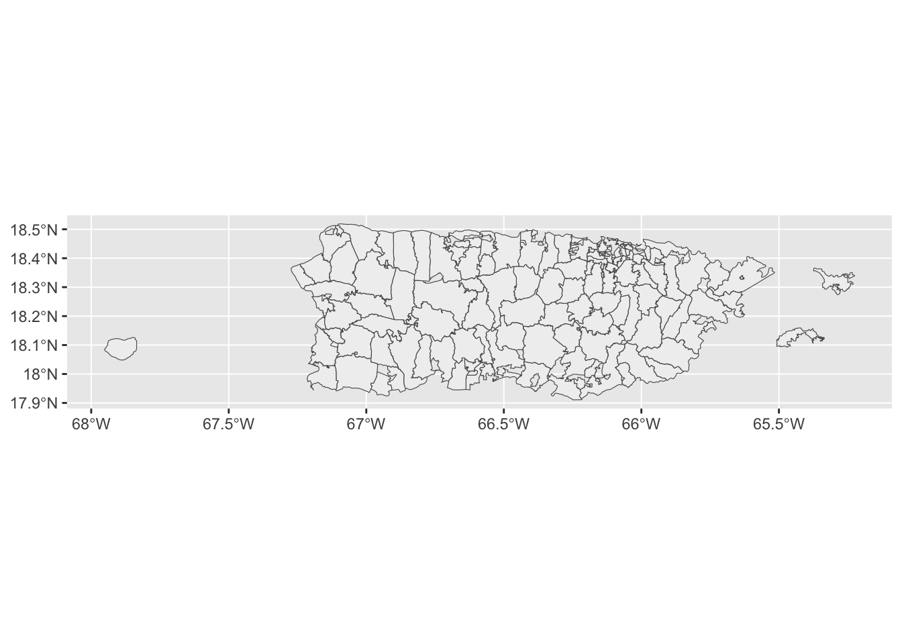
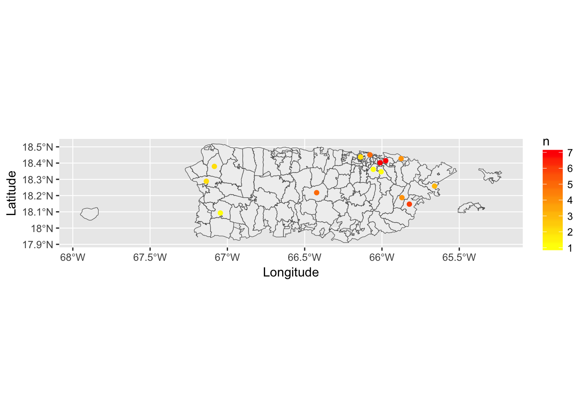

Visualizing Puerto Rican Homelessness in Western New York
Sara Peterson
Introduction
Homeless individuals are among the most marginalized populations of society. Homeless populations are further marginalized in data collection and representation. Even efforts specifically intended to record homeless data can inadvertently further marginalize certain groups of homeless individuals, as seen in an anonymized data set of homeless shelter visits in Erie County in 2015, provided by the Homeless Alliance of WNY. Previous research found that there were data issues in this official data set, as zip codes that were viewed as “incomplete” were thrown out of the official data set. This led to migrants from particular places being omitted from data analysis and official reports. Those individuals ignored in official reports includes 46 individuals who moved from Puerto Rico before becoming homeless in Erie County. This project uses R to visually represent this phenomenon of individuals moving from Puerto Rico before becoming homeless in Western New York. It maps the origins of these individuals and visually represents migration as movement along great circle lines.
Materials and methods
Narrative and most code will go here. Describe what you are doing and show how to do it (with code).
You can do bullets like this:
- The first most important thing
- The second most important thing
- The third most important thing
You can do numbers like this:
- The first most important thing
- The second most important thing
- The third most important thing
See http://rmarkdown.rstudio.com/ for all the amazing things you can do.
Load any required packages in a code chunk (you may need to install some packages):
library(zipcode)
library(readxl)
library(rgeos)
library(dplyr)
library(tidyverse)
library(maps)
library(ggmap)
library(choroplethr)
library(USAboundaries)
library(tigris)
library(sf)
library(geosphere)
library(RColorBrewer)
library(maptools)
library(ggplot2)
knitr::opts_chunk$set(cache=TRUE) # cache the results for quick compilingRead in the anonymized data set provided by the Western New York Homeless Alliance
Buffalo_Shelter_Data <- read_csv("~/Desktop/Adam's Class/*final project/Buffalo Shelter Data (original).csv")## Parsed with column specification:
## cols(
## Zip = col_character(),
## `FAKE ID` = col_integer(),
## `Month of Entry` = col_character(),
## `Days In Program` = col_integer(),
## `Client Age` = col_integer(),
## `FAKE HOUSEHOLD ID` = col_number(),
## `Household Type` = col_character(),
## Gender = col_character(),
## Country = col_character(),
## `Country Abbreviation` = col_character()
## )Use the zipcode package to clean the zipcodes in the Buffalo Shelter Data CSV
clean.zipcodes(Buffalo_Shelter_Data)## [1] NA NA NA NA NA NA NA NA NA NAUse the zipcode package to create a data frame with the zipcodes for Puerto Rico. Rename the column heads so that they can later be more easily joined to the Buffalo Shelter Data
## the final output from this section of code isn't ready to go yet, but it will be used to generate a map in future iterations of the project
data("zipcode")
names<-c("Zip","City","State","Latitude","Longitude")
colnames(zipcode, do.NULL = TRUE, prefix = "col")## [1] "zip" "city" "state" "latitude" "longitude"colnames(zipcode)<-names
PRdataframe<-filter(zipcode,State=="PR")
PRdataframe## Zip City State Latitude Longitude
## 1 00601 Adjuntas PR 18.18010 -66.74947
## 2 00602 Aguada PR 18.36329 -67.18024
## 3 00603 Aguadilla PR 18.44862 -67.13422
## 4 00604 Aguadilla PR 18.49899 -67.13699
## 5 00605 Aguadilla PR 18.46516 -67.14149
## 6 00606 Maricao PR 18.18215 -66.95880
## 7 00607 Aguas Buenas PR 18.25699 -66.10466
## 8 00609 Aibonito PR 18.14200 -66.27328
## 9 00610 Anasco PR 18.28832 -67.13604
## 10 00611 Angeles PR 18.27953 -66.80217
## 11 00612 Arecibo PR 18.44973 -66.69879
## 12 00613 Arecibo PR 18.45809 -66.73273
## 13 00614 Arecibo PR 18.42967 -66.67451
## 14 00615 Arroyo PR 17.96977 -66.06146
## 15 00616 Bajadero PR 18.42675 -66.67669
## 16 00617 Barceloneta PR 18.45550 -66.55575
## 17 00618 Barranquitas PR 18.18546 -66.30583
## 18 00622 Boqueron PR 18.00313 -67.16745
## 19 00623 Cabo Rojo PR 18.08643 -67.15222
## 20 00624 Penuelas PR 18.05540 -66.72602
## 21 00625 Caguas PR 18.23211 -66.03909
## 22 00626 Caguas PR 18.23500 -66.03732
## 23 00627 Camuy PR 18.43525 -66.85644
## 24 00631 Castaner PR 18.18674 -66.85174
## 25 00633 Cayey PR 18.19453 -66.18347
## 26 00634 Cayey PR 18.11153 -66.17708
## 27 00635 Ceiba PR 18.26290 -65.64653
## 28 00636 Rosario PR 18.11328 -67.03971
## 29 00637 Sabana Grande PR 18.07308 -66.94864
## 30 00638 Ciales PR 18.30814 -66.49835
## 31 00639 Cidra PR 18.17609 -66.15873
## 32 00640 Coamo PR 18.07720 -66.35910
## 33 00641 Utuado PR 18.26890 -66.70519
## 34 00643 Corozal PR 18.34125 -66.31519
## 35 00644 Coto Laurel PR 18.04958 -66.55218
## 36 00645 Culebra PR 18.30851 -65.30473
## 37 00646 Dorado PR 18.44280 -66.27689
## 38 00647 Ensenada PR 17.96453 -66.93993
## 39 00648 Fajardo PR 18.33304 -65.65618
## 40 00650 Florida PR 18.36333 -66.56773
## 41 00652 Garrochales PR 18.45745 -66.61217
## 42 00653 Guanica PR 17.99211 -66.90097
## 43 00654 Jobos PR 17.97952 -66.11722
## 44 00655 Olimpo PR 17.97637 -66.11679
## 45 00656 Guayanilla PR 18.03887 -66.79168
## 46 00658 Gurabo PR 18.25414 -65.97361
## 47 00659 Hatillo PR 18.43296 -66.80039
## 48 00660 Hormigueros PR 18.13911 -67.12085
## 49 00661 Humacao PR 18.15083 -65.82659
## 50 00662 Isabela PR 18.47885 -67.01973
## 51 00664 Jayuya PR 18.21257 -66.59243
## 52 00665 Ponce PR 18.04422 -66.50210
## 53 00666 Juncos PR 18.22895 -65.92136
## 54 00667 Lajas PR 18.01782 -67.04226
## 55 00669 Lares PR 18.28842 -66.87503
## 56 00670 Las Marias PR 18.24134 -66.97604
## 57 00671 Las Piedras PR 18.17890 -65.86994
## 58 00674 Manati PR 18.42614 -66.48697
## 59 00676 Moca PR 18.37956 -67.08424
## 60 00677 Rincon PR 18.33612 -67.23675
## 61 00678 Quebradillas PR 18.44233 -66.93275
## 62 00680 Mayaguez PR 18.20523 -67.12655
## 63 00681 Mayaguez PR 18.21902 -67.50807
## 64 00682 Mayaguez PR 18.20840 -67.15428
## 65 00683 San German PR 18.09281 -67.04524
## 66 00685 San Sebastian PR 18.33260 -66.98104
## 67 00687 Morovis PR 18.31708 -66.41528
## 68 00688 Sabana Hoyos PR 18.40415 -66.61348
## 69 00690 San Antonio PR 18.49537 -67.09867
## 70 00692 Vega Alta PR 18.41967 -66.33186
## 71 00693 Vega Baja PR 18.44067 -66.39210
## 72 00694 Vega Baja PR 18.44311 -66.39830
## 73 00698 Yauco PR 18.06547 -66.85587
## 74 00703 Aguas Buenas PR 18.24620 -66.12827
## 75 00704 Aguirre PR 17.97011 -66.22291
## 76 00705 Aibonito PR 18.12942 -66.26541
## 77 00707 Maunabo PR 18.01450 -65.91018
## 78 00714 Arroyo PR 17.98729 -66.05552
## 79 00715 Mercedita PR 18.00349 -66.55868
## 80 00716 Ponce PR 17.99907 -66.59965
## 81 00717 Ponce PR 18.00430 -66.61374
## 82 00718 Naguabo PR 18.22048 -65.74293
## 83 00719 Naranjito PR 18.29457 -66.25098
## 84 00720 Orocovis PR 18.21783 -66.42265
## 85 00721 Palmer PR 18.36416 -65.77829
## 86 00723 Patillas PR 18.02320 -66.01310
## 87 00725 Caguas PR 18.23393 -66.04502
## 88 00726 Caguas PR 18.21297 -66.05803
## 89 00727 Caguas PR 18.23000 -66.03000
## 90 00728 Ponce PR 18.01335 -66.65218
## 91 00729 Canovanas PR 18.35615 -65.89089
## 92 00730 Ponce PR 18.02263 -66.61727
## 93 00731 Ponce PR 18.07733 -66.61192
## 94 00732 Ponce PR 18.02178 -66.61374
## 95 00733 Ponce PR 18.01933 -66.61916
## 96 00734 Ponce PR 17.99950 -66.64393
## 97 00735 Ceiba PR 18.25844 -65.65987
## 98 00736 Cayey PR 18.11290 -66.15377
## 99 00737 Cayey PR 18.10297 -66.13927
## 100 00738 Fajardo PR 18.32265 -65.66116
## 101 00739 Cidra PR 18.16984 -66.16271
## 102 00740 Puerto Real PR 18.33171 -65.62761
## 103 00741 Punta Santiago PR 18.16076 -65.75765
## 104 00742 Roosevelt Roads PR 18.26487 -65.59477
## 105 00744 Rio Blanco PR 18.20633 -65.74306
## 106 00745 Rio Grande PR 18.36621 -65.82277
## 107 00747 Lluveras PR 18.06947 -66.95259
## 108 00748 Fajardo PR 18.32673 -65.65248
## 109 00751 Salinas PR 17.99380 -66.26534
## 110 00752 San Antonio PR 18.49375 -67.09773
## 111 00754 San Lorenzo PR 18.15633 -65.96831
## 112 00757 Santa Isabel PR 17.98631 -66.39457
## 113 00761 Utuado PR 18.26544 -66.70236
## 114 00762 Vega Alta PR 18.42022 -66.32428
## 115 00763 Monserrate PR 18.45218 -66.39984
## 116 00764 Vega Baja PR 18.45208 -66.39714
## 117 00765 Vieques PR 18.12566 -65.45603
## 118 00766 Villalba PR 18.12602 -66.48208
## 119 00767 Yabucoa PR 18.07275 -65.89703
## 120 00768 Yauco PR 18.03072 -66.85618
## 121 00769 Coamo PR 18.09281 -66.36110
## 122 00771 Las Piedras PR 18.18744 -65.87088
## 123 00772 Loiza PR 18.42767 -65.87605
## 124 00773 Luquillo PR 18.36134 -65.72133
## 125 00775 Culebra PR 18.31115 -65.29257
## 126 00777 Juncos PR 18.22409 -65.91316
## 127 00778 Gurabo PR 18.25863 -65.97791
## 128 00780 Coto Laurel PR 18.06854 -66.55939
## 129 00782 Comerio PR 18.22335 -66.22670
## 130 00783 Corozal PR 18.30487 -66.32305
## 131 00784 Guayama PR 17.98414 -66.12779
## 132 00785 Guayama PR 18.01882 -66.79560
## 133 00786 La Plata PR 18.12809 -66.26872
## 134 00791 Humacao PR 18.14726 -65.82269
## 135 00792 Humacao PR 18.13803 -65.78850
## 136 00794 Barranquitas PR 18.20429 -66.31058
## 137 00795 Juana Diaz PR 18.03625 -66.50289
## 138 00901 San Juan PR 18.46543 -66.10786
## 139 00902 San Juan PR 18.41046 -66.06053
## 140 00906 San Juan PR 18.46454 -66.10079
## 141 00907 San Juan PR 18.45113 -66.07798
## 142 00908 San Juan PR 18.41046 -66.06053
## 143 00909 San Juan PR 18.44228 -66.06764
## 144 00910 San Juan PR 18.41046 -66.06053
## 145 00911 San Juan PR 18.45009 -66.05770
## 146 00912 San Juan PR 18.44595 -66.05928
## 147 00913 San Juan PR 18.45091 -66.04256
## 148 00914 San Juan PR 18.41046 -66.06053
## 149 00915 San Juan PR 18.43699 -66.04888
## 150 00916 San Juan PR 18.41046 -66.06053
## 151 00917 San Juan PR 18.42226 -66.05130
## 152 00918 San Juan PR 18.41767 -66.06494
## 153 00919 San Juan PR 18.41046 -66.06053
## 154 00920 San Juan PR 18.41242 -66.09069
## 155 00921 San Juan PR 18.39402 -66.08633
## 156 00922 San Juan PR 18.41046 -66.06053
## 157 00923 San Juan PR 18.41068 -66.03806
## 158 00924 San Juan PR 18.40192 -66.01194
## 159 00925 San Juan PR 18.40001 -66.05028
## 160 00926 San Juan PR 18.36136 -66.05620
## 161 00927 San Juan PR 18.39184 -66.06867
## 162 00928 San Juan PR 18.41046 -66.06053
## 163 00929 San Juan PR 18.41046 -66.06053
## 164 00930 San Juan PR 18.41046 -66.06053
## 165 00931 San Juan PR 18.41046 -66.06053
## 166 00933 San Juan PR 18.41046 -66.06053
## 167 00934 Fort Buchanan PR 18.41351 -66.12198
## 168 00935 San Juan PR 18.41046 -66.06053
## 169 00936 San Juan PR 18.41046 -66.06053
## 170 00937 San Juan PR 18.41046 -66.06053
## 171 00938 San Juan PR 18.41046 -66.06053
## 172 00939 San Juan PR 18.41046 -66.06053
## 173 00940 San Juan PR 18.41046 -66.06053
## 174 00949 Toa Baja PR 18.43317 -66.20420
## 175 00950 Toa Baja PR 18.45776 -66.19650
## 176 00951 Toa Baja PR 18.45776 -66.19650
## 177 00952 Sabana Seca PR 18.42922 -66.18014
## 178 00953 Toa Alta PR 18.36802 -66.23414
## 179 00954 Toa Alta PR 18.35894 -66.25811
## 180 00955 San Juan PR 18.41046 -66.06053
## 181 00956 Bayamon PR 18.34216 -66.16643
## 182 00957 Bayamon PR 18.36967 -66.18669
## 183 00958 Bayamon PR 18.34487 -66.16601
## 184 00959 Bayamon PR 18.38706 -66.15943
## 185 00960 Bayamon PR 18.34487 -66.16601
## 186 00961 Bayamon PR 18.41246 -66.16033
## 187 00962 Catano PR 18.43768 -66.13847
## 188 00963 Catano PR 18.44322 -66.13929
## 189 00965 Guaynabo PR 18.43145 -66.11703
## 190 00966 Guaynabo PR 18.39851 -66.11522
## 191 00968 Guaynabo PR 18.40848 -66.10250
## 192 00969 Guaynabo PR 18.36698 -66.10889
## 193 00970 Guaynabo PR 18.35914 -66.11230
## 194 00971 Guaynabo PR 18.32969 -66.11876
## 195 00975 San Juan PR 18.41046 -66.06053
## 196 00976 Trujillo Alto PR 18.34677 -66.00561
## 197 00977 Trujillo Alto PR 18.33700 -65.99010
## 198 00978 St Just PR 18.33700 -65.99010
## 199 00979 Carolina PR 18.43189 -66.01270
## 200 00981 Carolina PR 18.41046 -66.06053
## 201 00982 Carolina PR 18.40934 -65.99313
## 202 00983 Carolina PR 18.41441 -65.97582
## 203 00984 Carolina PR 18.39335 -65.97249
## 204 00985 Carolina PR 18.37490 -65.94691
## 205 00986 Carolina PR 18.39335 -65.97249
## 206 00987 Carolina PR 18.37223 -65.96275
## 207 00988 Carolina PR 18.39335 -65.97249Use the tigris package to download the physical boundaries for Puerto Rico zip codes and convert to sf
#run the following line of code only once to download the boundary data -- it may take awhile
#zips<-zctas(cb = FALSE, starts_with = NULL, year = 2010, state = NULL)
#use the following line of code to
options(tigris_use_cache = TRUE)
PRzips<-zctas(cb = FALSE, starts_with = NULL, year = 2010, state = "PR")%>%
st_as_sf()
PRzips## Simple feature collection with 131 features and 11 fields
## geometry type: MULTIPOLYGON
## dimension: XY
## bbox: xmin: -67.9518 ymin: 17.91082 xmax: -65.22464 ymax: 18.51871
## epsg (SRID): 4269
## proj4string: +proj=longlat +ellps=GRS80 +towgs84=0,0,0,0,0,0,0 +no_defs
## First 20 features:
## STATEFP10 ZCTA5CE10 GEOID10 CLASSFP10 MTFCC10 FUNCSTAT10 ALAND10
## 0 72 00677 7200677 B5 G6350 S 37137111
## 1 72 00960 7200960 B5 G6350 S 2409664
## 2 72 00969 7200969 B5 G6350 S 12622328
## 3 72 00627 7200627 B5 G6350 S 120058334
## 4 72 00783 7200783 B5 G6350 S 108382318
## 5 72 00704 7200704 B5 G6350 S 12627769
## 6 72 00771 7200771 B5 G6350 S 87591047
## 7 72 00766 7200766 B5 G6350 S 103701762
## 8 72 00683 7200683 B5 G6350 S 135168308
## 9 72 00907 7200907 B5 G6350 S 3132947
## 10 72 00690 7200690 B5 G6350 S 7291346
## 11 72 00725 7200725 B5 G6350 S 109190812
## 12 72 00616 7200616 B5 G6350 S 29870473
## 13 72 00794 7200794 B5 G6350 S 91419799
## 14 72 00934 7200934 B5 G6350 S 1940428
## 15 72 00979 7200979 B5 G6350 S 4061150
## 16 72 00976 7200976 B5 G6350 S 43356810
## 17 72 00924 7200924 B5 G6350 S 12143485
## 18 72 00719 7200719 B5 G6350 S 72527843
## 19 72 00698 7200698 B5 G6350 S 180309254
## AWATER10 INTPTLAT10 INTPTLON10 PARTFLG10
## 0 3594951 +18.3325604 -067.2270064 N
## 1 2485 +18.4169186 -066.1457949 N
## 2 39797 +18.3680620 -066.1080617 N
## 3 3507026 +18.4150296 -066.8618789 N
## 4 16292 +18.3039098 -066.3261795 N
## 5 1773833 +17.9657700 -066.2195545 N
## 6 32514 +18.1872011 -065.8711961 N
## 7 3739022 +18.1331964 -066.4769157 N
## 8 29361 +18.1077999 -067.0372633 N
## 9 347421 +18.4526791 -066.0781130 N
## 10 12393 +18.4955100 -067.0986713 N
## 11 1190612 +18.2188191 -066.0423752 N
## 12 149147 +18.4204125 -066.6719793 N
## 13 77809 +18.1990137 -066.3097816 N
## 14 26786 +18.4113129 -066.1242340 N
## 15 504754 +18.4443885 -066.0301286 N
## 16 738172 +18.3364081 -065.9940571 N
## 17 1620 +18.3991958 -066.0124523 N
## 18 898356 +18.2899272 -066.2534401 N
## 19 7761848 +18.0648484 -066.8563194 N
## geometry
## 0 MULTIPOLYGON (((-67.192756 ...
## 1 MULTIPOLYGON (((-66.153228 ...
## 2 MULTIPOLYGON (((-66.114808 ...
## 3 MULTIPOLYGON (((-66.825655 ...
## 4 MULTIPOLYGON (((-66.342187 ...
## 5 MULTIPOLYGON (((-66.232929 ...
## 6 MULTIPOLYGON (((-65.865887 ...
## 7 MULTIPOLYGON (((-66.452027 ...
## 8 MULTIPOLYGON (((-67.093745 ...
## 9 MULTIPOLYGON (((-66.086172 ...
## 10 MULTIPOLYGON (((-67.101399 ...
## 11 MULTIPOLYGON (((-66.063666 ...
## 12 MULTIPOLYGON (((-66.68991 1...
## 13 MULTIPOLYGON (((-66.314541 ...
## 14 MULTIPOLYGON (((-66.121829 ...
## 15 MULTIPOLYGON (((-66.040704 ...
## 16 MULTIPOLYGON (((-65.968131 ...
## 17 MULTIPOLYGON (((-66.03084 1...
## 18 MULTIPOLYGON (((-66.292568 ...
## 19 MULTIPOLYGON (((-66.91667 1...Join the Buffalo Shelter Data and the PRdataframe by zip code, then assign coordinates using “Longitude” and “Latitude”. You can now plot the general location of where homeless people were coming from based on the controid coordinates of their zip code origin.
BufDataLL<-inner_join(Buffalo_Shelter_Data, PRdataframe, by= "Zip")
coordinates(BufDataLL)<-c("Longitude","Latitude")
#View(BufDataLL)
#plot(BufDataLL)Summarize the data by the count of individuals coming from each of the different zip codes.
#create count_in_zips, which is an inner join of the Buffalo Shelter Data and the PRzips sf object, then group by zip code and summarize
count_in_zips<-inner_join(Buffalo_Shelter_Data, PRzips, by= c("Zip" = "ZCTA5CE10"))%>%group_by(Zip)%>%summarise(n=n())
#count_in_zips
#create count_in_zips_points, which is a left join of the count_in_zips data frame that you just created and the PRdataframe that has the locations of the zip codes
count_in_zips_points<-left_join(count_in_zips,PRdataframe,by= "Zip")
#set the coordinates
coordinates(count_in_zips_points)<-c("Longitude","Latitude")
#set as sf
st_as_sf(count_in_zips_points)## Simple feature collection with 14 features and 4 fields
## geometry type: POINT
## dimension: XY
## bbox: xmin: -67.13604 ymin: 18.09281 xmax: -65.65987 ymax: 18.45113
## epsg (SRID): NA
## proj4string: NA
## # A tibble: 14 x 5
## Zip n City State geometry
## <chr> <int> <chr> <chr> <simple_feature>
## 1 00610 2 Anasco PR <POINT (-67.1...>
## 2 00676 2 Moca PR <POINT (-67.0...>
## 3 00683 1 San German PR <POINT (-67.0...>
## 4 00720 5 Orocovis PR <POINT (-66.4...>
## 5 00735 3 Ceiba PR <POINT (-65.6...>
## 6 00771 4 Las Piedras PR <POINT (-65.8...>
## 7 00772 4 Loiza PR <POINT (-65.8...>
## 8 00791 6 Humacao PR <POINT (-65.8...>
## 9 00907 5 San Juan PR <POINT (-66.0...>
## 10 00924 7 San Juan PR <POINT (-66.0...>
## 11 00926 1 San Juan PR <POINT (-66.0...>
## 12 00962 2 Catano PR <POINT (-66.1...>
## 13 00976 1 Trujillo Alto PR <POINT (-66.0...>
## 14 00983 7 Carolina PR <POINT (-65.9...>#plot
#plot(count_in_zips_points)
#create count_in_zips_polygons, which is the count_in_zips dataframe set as a sf
count_in_zips_polygons<-inner_join(Buffalo_Shelter_Data, PRzips, by= c("Zip" = "ZCTA5CE10"))%>%st_as_sf()%>%group_by(Zip)%>%summarise(n=n())
#plot
#plot(count_in_zips_polygons)Results
Map of the Puerto Rico zip code boundaries using ggplot
##map of boundaries
ggplot(PRzips)+
geom_sf(lwd=0.2,fill="#f0f0f0")
Choropleth map of density (number of people coming to Buffalo from each Puerto Rican zip code)
###choropleth map of density
ggplot(PRzips)+
geom_sf(lwd=0.2,fill="#f0f0f0")+
geom_sf(data=count_in_zips_polygons, aes(fill = n)) +
scale_fill_gradient(low = "yellow", high = "red")Map of centroid dots of location of origin; color indicating number coming from that place
#create points as data frame to use in ggplot
points <- data.frame(count_in_zips_points)
#plot
ggplot(PRzips)+
geom_sf(lwd=0.2,fill="#f0f0f0")+
geom_point(data=points, aes(x=Longitude, y=Latitude, colour=n))+
scale_colour_gradient(low = "yellow", high = "red")
Map of centroid dots of location of origin; size indicating number coming from that place
##map of dots, sized by number
ggplot(PRzips)+
geom_sf(lwd=0.2,fill="#f0f0f0")+
geom_point(data=points, aes(x=Longitude, y=Latitude, size=n, alpha=.5))Map of migration to Buffalo along great circle lines, weighted by the number of people coming from each place (darker = more people)
xlim <- c(-140, -55.5)
ylim <- c(12, 50)
BuffaloCoordinates=as.matrix(geocode("Buffalo, NY"))## Information from URL : http://maps.googleapis.com/maps/api/geocode/json?address=Buffalo,%20NY&sensor=falsepal <- colorRampPalette(c("#f2f2f2", "black"))
colors <- pal(100)
map("world", col="#f1f1f1", fill=TRUE, bg="white", lwd=0.2, xlim=xlim, ylim=ylim)
for (j in 1:length(points$n)) {
inter <- gcIntermediate(c(points[j,]$Longitude, points[j,]$Latitude), BuffaloCoordinates, n=100, addStartEnd=TRUE)
colindex <- round( (points[j,]$n / 7) * length(colors) )
lines(inter, col=colors[colindex], lwd=0.8)
}
Zoomed-in map of migration to Buffalo along great circle lines, weighted by the number from each place (darker = more people)
xlim <- c(-90, -60)
ylim <- c(18, 45)
BuffaloCoordinates=as.matrix(geocode("Buffalo, NY"))## Information from URL : http://maps.googleapis.com/maps/api/geocode/json?address=Buffalo,%20NY&sensor=falsepal <- colorRampPalette(c("#f2f2f2", "black"))
colors <- pal(100)
map("world", col="#f1f1f1", fill=TRUE, bg="white", lwd=0.2, xlim=xlim, ylim=ylim)
for (j in 1:length(points$n)) {
inter <- gcIntermediate(c(points[j,]$Longitude, points[j,]$Latitude), BuffaloCoordinates, n=100, addStartEnd=TRUE)
colindex <- round( (points[j,]$n / 7) * length(colors) )
lines(inter, col=colors[colindex], lwd=0.8)
}
Conclusions
What have you learned? Are there any broader implications?